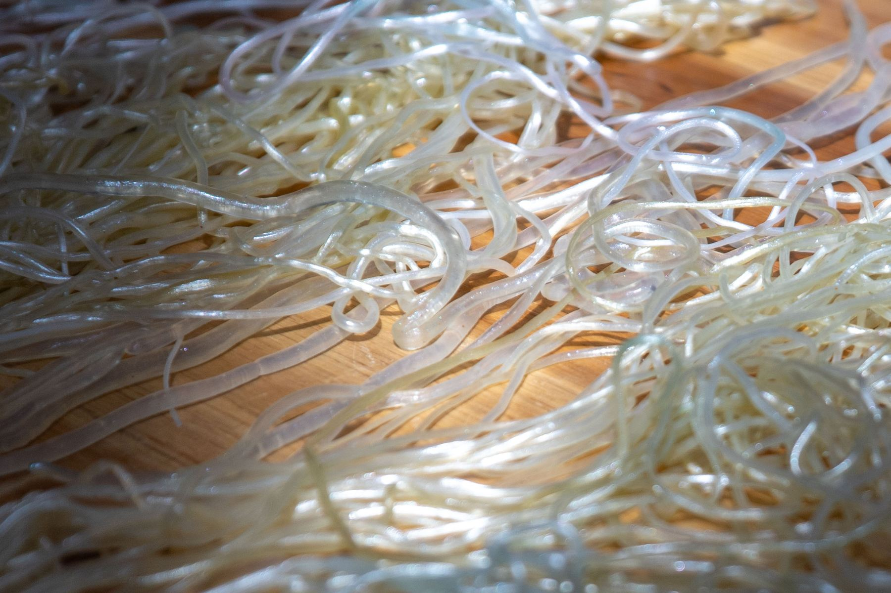

Statement
Design from interdependence, not authorship.
My practice treats alginate as a reactive, situated material system, shaped less by control than by conditions. Design, here, emerges from processes of transformation, decay and environmental attunement, and from the more-than-human relationships that the Venetian lagoon makes visible.
Three directions
- 01Material researchAlgae-based biomaterials and alginate yarn, developed through a research-through-design approach.
- 02Situated practiceA material that behaves: it stiffens like algae in the sun, softens with care. It has to be listened to, not only worked.
- 03Collective learningWorkshops, seminars and lectures as spaces of exchange. The learning goes both ways.
Protocol
From liquid to thread.
| Step | Operation | Parameter | Observation |
|---|---|---|---|
| 01 | Hydrate the alginate | 2.0 % w/v | Stir slowly, avoid air |
| 02 | Rest the mixture | 24 h · 18 to 22 °C | Bubbles rise and disappear |
| 03 | Prepare the bath | CaCl₂ 2.0 % w/v | Clear, room temperature |
| 04 | Extrude | Ø nozzle 2 mm | Steady pressure, steady thread |
| 05 | Gelation in the bath | 5 to 10 min | Skin first, core later |
| 06 | Rinse and dry | 24 to 48 h | Mass loss, see FIG. A |
Observation
The thread loses water, not shape.
FIG. A · Drying of an alginate thread, relative mass over time● rinsed in water · - - not rinsedillustrative data, to replace with Emi’s measurements
Manifesto placeholder
Matter is not passive. It reacts, resists and remembers.
Failure is information. A thread that breaks tells you why.
Conditions shape form as much as hands do: water, salt, time, care.
Knowledge grows when it is shared, in kitchens, classrooms and studios.
Draft lines, to be rewritten by Carola.
Writings
Thesis, texts and publications.
- 2025AmalgamaContribution on biomaterial experimentation and lagoon ecologies. TBA21-Academy, Bruno Books.
- IuavMaster's thesis, Fashion to confirmIuav University of Venice. Title to add.
- BAFine Arts thesis on plant intelligence to confirmTitle and year to add.
- SoonSubstackMonthly notes from the bench.Read on Substack →

Publication · 2025
Amalgama
A printed publication commissioned by TBA21-Academy and edited by Chiara Famengo, in collaboration with Barena Bianca and Tocia! Cucina e Comunità. Published by Bruno Books, printed by No Stress Press. It brings together artists, designers, researchers and local practitioners engaged with the cultural and ecological landscapes of the Venetian Lagoon.
My contribution focuses on biomaterial experimentation and algae-based research, and on how lagoon ecologies can inform other ways of thinking about materials: design that emerges from interdependence, transformation and environmental attunement.

Material archive
One experiment a month.
A diary of tests, failures and discoveries, with the article, the video and the materials for each one.